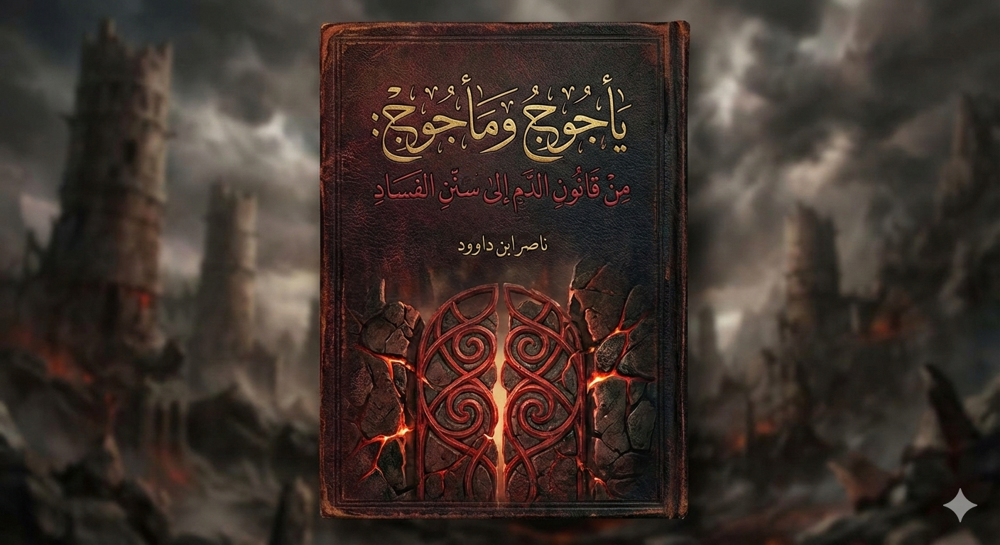

📥 روابط التحميل المباشر
📄 DOCX 📖 PDF (مباشر) 📖 PDF (خارجي) 🌐 HTML 📝 نص خام (خارجي) 📝 نص خام (مباشر) 📚 Archive.orgوصف الكتاب
في مطلع هذا العصر، وتحديداً في يناير 2026، حيث يقف العالم على أعتاب تحولات تقنية ووجودية كبرى، تبرز قضية "يأجوج ومأجوج" ليس كمجرد سردية تاريخية أو نبوءة مستقبلية غامضة، بل كرمز حي وصارخ للفساد المنظومي الذي يهدد مسارات الوجود البشري.
هذا الكتاب الذي بين يديك، "سلسلة يأجوج ومأجوج: من قانون الدم إلى سنن الفساد"، ليس مجرد إضافة للمكتبة التفسيرية، بل هو رحلة تدبرية عميقة تحاول فك شفرات "الخريطة الإلهية" للكون والإنسان.
الرؤية المنهجية
تنطلق هذه الرحلة من "قانون الدم"؛ ذلك المسار المغلق الذي يمثل قمة النظام الإلهي، لتمر عبر "سنن الفساد" التي تتجلى في كسر هذه المسارات وتسييل الثوابت، وصولاً إلى غاية الغايات: "الاستخلاف" بوصفه مسؤولية حراسة هذه البوابات والمسارات بوعي وإيمان.
يجمع الكتاب بين التحليل القرآني العميق والرؤية المعاصرة، مقدمًا منهجية متكاملة لفهم يأجوج ومأجوج كنمط "تأجيجي" يظهر كلما انكسرت الحماية الوجودية، وذو القرنين كنموذج للمستخلف الذي يسخر العلم والقوة لبناء "الردم".
أبرز مميزات الكتاب:
- رحلة تدبرية عميقة لفك شفرات الخريطة الإلهية للكون والإنسان
- تحليل يأجوج ومأجوج كرمز للفساد المنظومي المعاصر
- ربط التراث النبوي بالتحديات التقنية في 2026
- عرض محايد وشامل للأطروحات التراثية والمعاصرة
- رؤية عملية للاستخلاف وبناء الردم الرقمي المعاصر
امتداد لمشروع فقه اللسان والاستخلاف
- كتاب "الدم - شفرة الوجود التي أهملناها": القواعد اللسانية والكونية لشفرة (د + م)
- كتاب "وَلِيَكُونَ مِنَ الْمُوقِنِينَ": رحلة استبصارية في ملكوت السماوات والأرض
- هذا الكتاب: تطبيق عملي لفهم يأجوج ومأجوج وذو القرنين في ضوء هذه القواعد
هيكل الرحلة (فهرس المحتويات)
الاستجابة لعام 2026: الردم الرقمي
نرى "التأجيج" اليوم يتخذ صوراً رقمية وفكرية مخيفة. مع تصاعد سطوة الذكاء الاصطناعي وتسييل المعاني في فضاء الإنترنت، يصبح "الردم المعاصر" ضرورة لا ترفاً.
هذا الكتاب يدعو الشباب خاصة للتحول من حالة "الترقب السلبي" للنهايات، إلى حالة "الحراسة النشطة" للبدايات، مستلهمين من القرآن الكريم دليلاً أبدياً لا يأتيه الباطل من بين يديه ولا من خلفه.
لمن هذا الكتاب؟
- الباحثون في الدراسات القرآنية: المهتمون بالتفسير الموضوعي والسنن الإلهية
- المهتمون بالإعجاز العلمي: الراغبون في فهم الظواهر الكونية في ضوء القرآن
- المفكرون والإعلاميون: المهتمون بتحليل الأحداث المعاصرة برؤية قرآنية
- الشباب الواعي: الراغبون في فهم دورهم في مواجهة التحديات الرقمية
- عموم القراء: المهتمون بموضوع يأجوج ومأجوج وذو القرنين
بين التراث والسنن: رؤية محايدة
في هذا العمل، آثرنا تقديم عرض محايد وشامل للأطروحات التي تناولت يأجوج ومأجوج وذي القرنين؛ بدءاً من الذاكرة التراثية العميقة التي صورتهم كقبائل خلف السد، وصولاً إلى الأطروحات المعاصرة والتحقيقات التاريخية التي تربطهم بأراضٍ برزخية وراء القطب، أو ترى في القمر "مرآة أسرار" تعكس خريطة الأرض المفقودة.
نحن لا نتبنى هذه الروايات أو نرفضها صراحة، بل نعرضها كـ "بيانات موسعة" تفتح للقارئ آفاق التدبر ليحكم بنفسه، مع ربطها دوماً بالقاعدة المركزية: يأجوج ومأجوج كنمط "تأجيجي" يظهر كلما انكسرت الحماية الوجودية، وذو القرنين كنموذج للمستخلف الذي يسخر العلم والقوة لبناء "الردم".